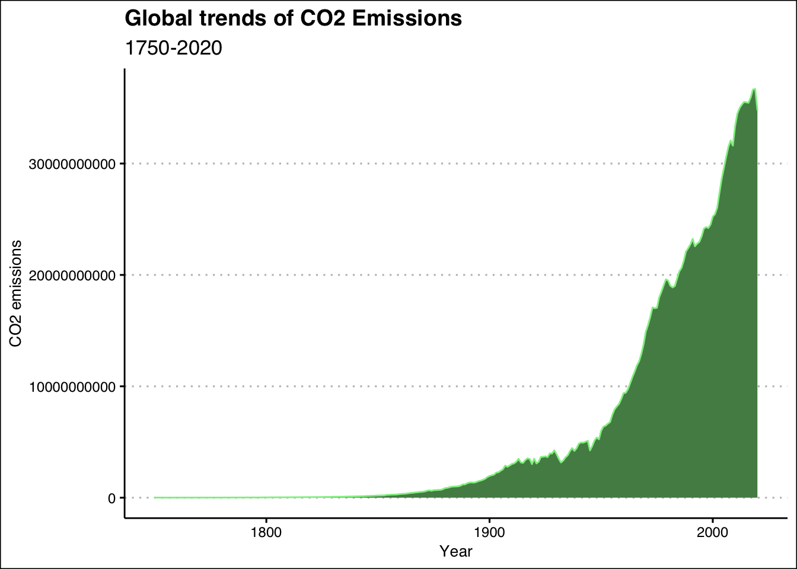
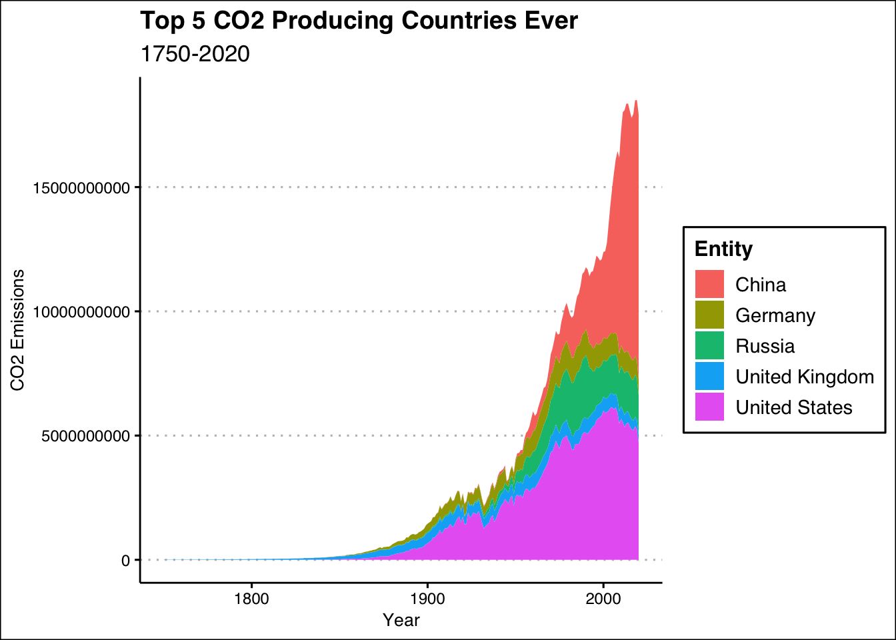
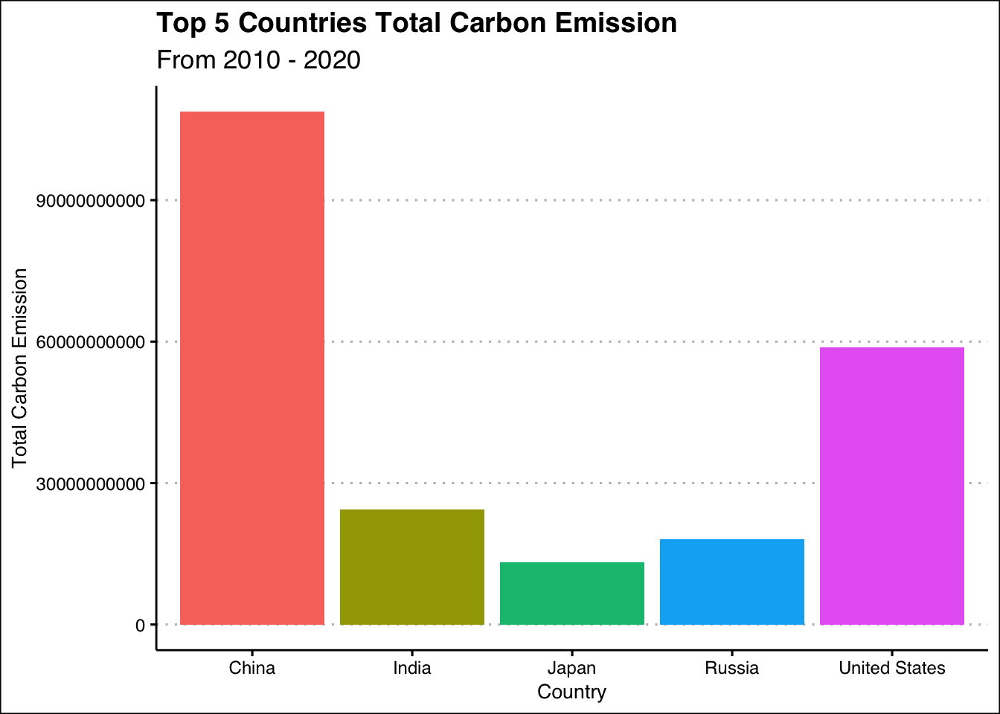
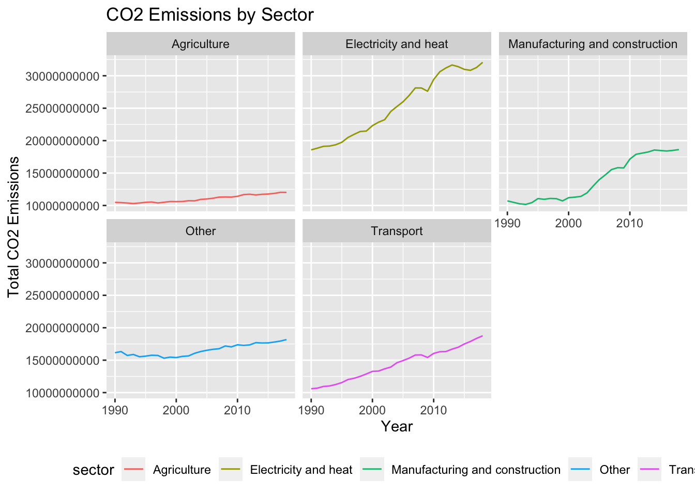

Carter
Home
About
CO2 Emissions Report
Matthew Rudd & Co.
2022-06-10
Globally

Top Producing CO2 Countries Throughout History
 
Current Trends in Emissions
by region
By Sector
Long-term Trends
By Sector
